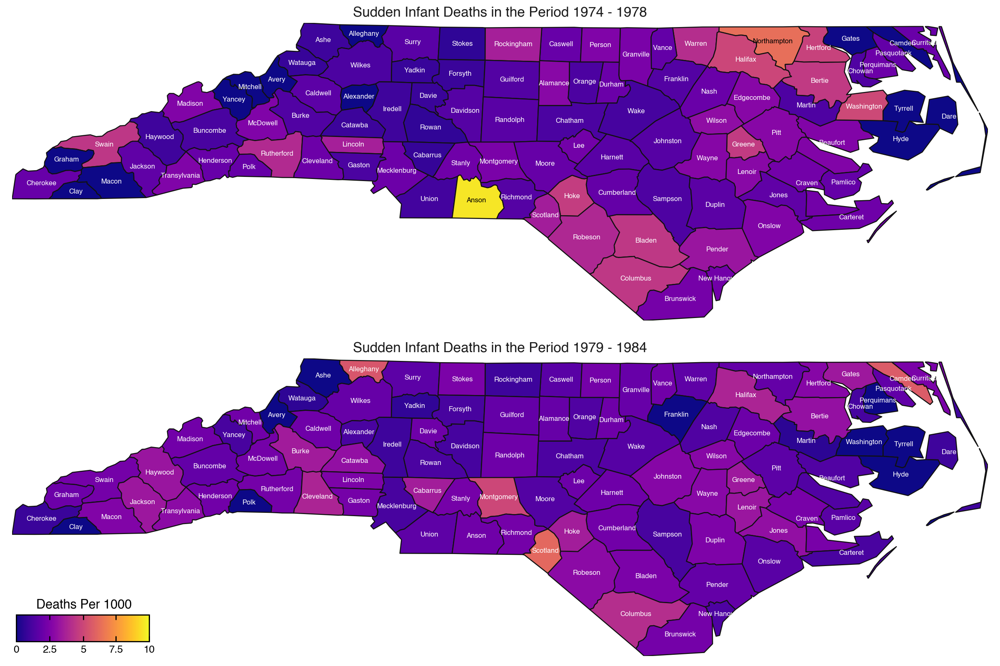
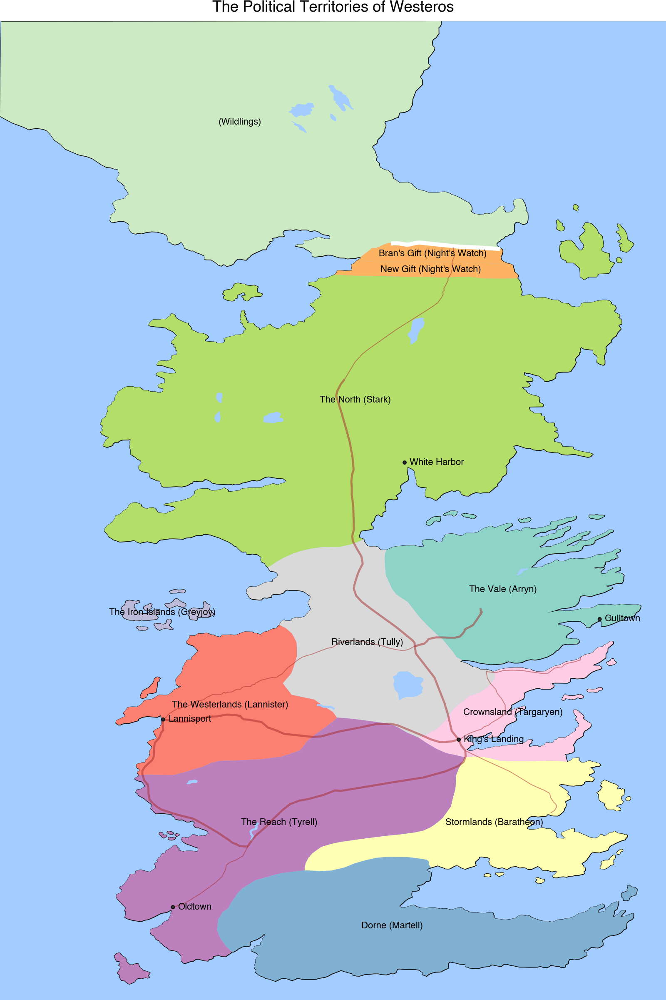

import geopandas as gp
import geodatasets
from plotnine import (
ggplot,
aes,
coord_fixed,
facet_wrap,
geom_map,
geom_text,
labs,
scale_fill_brewer,
scale_fill_continuous,
scale_x_continuous,
scale_y_continuous,
scale_size_continuous,
stage,
coord_cartesian,
element_line,
element_rect,
element_text,
theme_void,
theme,
)Define some useful functions
def good_centroid(geometry):
"""
Calculate "good" centroids for polygons in the geometry
The polygon is projected onto the Equal Area Cylindrical projection,
the centroids are computed, then mapped back onto the original
coordinate system.
"""
return geometry.to_crs("+proj=cea").centroid.to_crs(geometry.crs)
def overlay_color(rgb_hex_colors, light="white", dark="black", threshold=0.5):
"""
Decide which color is suitable to write onto the given colors
"""
def luminance(rgb_hex):
"""
Calculate the Luminance ([0, 1]) of a hex color
"""
r = int(rgb_hex[1:3], 16)
g = int(rgb_hex[3:5], 16)
b = int(rgb_hex[5:], 16)
luma = (r*0.299 + g*0.587 + b*0.0722) / 256
return luma
return [light if luminance(x) < threshold else dark for x in rgb_hex_colors]A Map from geodatasets
We are going to use a dataset from the geodatasets package. We can explore the dataset providers at geodatasets.data, each of which has one or more datasets:
We choose the dataset of Sudden Infant Death (SIDS) counts from counties in North Carolina. We can see some meta information about that dataset. You can view the details with geodatasets.data.geoda.sids.
Download the dataset we want (it is automatically cached).
geodatasets.fetch("geoda sids")Read data
sids = gp.read_file(geodatasets.get_path("geoda.sids"))
sids.head()| AREA | PERIMETER | CNTY_ | CNTY_ID | NAME | FIPS | FIPSNO | CRESS_ID | BIR74 | SID74 | NWBIR74 | BIR79 | SID79 | NWBIR79 | geometry | |
|---|---|---|---|---|---|---|---|---|---|---|---|---|---|---|---|
| 0 | 0.114 | 1.442 | 1825 | 1825 | Ashe | 37009 | 37009 | 5 | 1091.0 | 1.0 | 10.0 | 1364.0 | 0.0 | 19.0 | POLYGON ((-81.47276 36.23436, -81.54084 36.272... |
| 1 | 0.061 | 1.231 | 1827 | 1827 | Alleghany | 37005 | 37005 | 3 | 487.0 | 0.0 | 10.0 | 542.0 | 3.0 | 12.0 | POLYGON ((-81.23989 36.36536, -81.24069 36.379... |
| 2 | 0.143 | 1.630 | 1828 | 1828 | Surry | 37171 | 37171 | 86 | 3188.0 | 5.0 | 208.0 | 3616.0 | 6.0 | 260.0 | POLYGON ((-80.45634 36.24256, -80.47639 36.254... |
| 3 | 0.070 | 2.968 | 1831 | 1831 | Currituck | 37053 | 37053 | 27 | 508.0 | 1.0 | 123.0 | 830.0 | 2.0 | 145.0 | MULTIPOLYGON (((-76.00897 36.3196, -76.01735 3... |
| 4 | 0.153 | 2.206 | 1832 | 1832 | Northampton | 37131 | 37131 | 66 | 1421.0 | 9.0 | 1066.0 | 1606.0 | 3.0 | 1197.0 | POLYGON ((-77.21767 36.24098, -77.23461 36.214... |
The sids data has two periods 1974 - 1978 and 1979 - 1985. For each period there is a number of births and a number of deaths. We want to visually compare the deaths per 1000 in each county for the two periods.
data = sids.copy()
# Calculate the death per 1000
data["1974 - 1978"] = (data["SID74"] / data["BIR74"]) * 1000
data["1979 - 1984"] = (data["SID79"] / data["BIR79"]) * 1000
# Calculate center coordinates for the counties
data["center_lon"] = good_centroid(data.geometry).x
data["center_lat"] = good_centroid(data.geometry).y
# Make the data
data = data.melt(
id_vars=["NAME", "geometry", "center_lon", "center_lat"],
value_vars=["1974 - 1978", "1979 - 1984"],
var_name="period",
value_name="deaths_per_1k",
).rename(
{"NAME": "county"},
axis=1
)
data.head()| county | geometry | center_lon | center_lat | period | deaths_per_1k | |
|---|---|---|---|---|---|---|
| 0 | Ashe | POLYGON ((-81.47276 36.23436, -81.54084 36.272... | -81.498245 | 36.431263 | 1974 - 1978 | 0.916590 |
| 1 | Alleghany | POLYGON ((-81.23989 36.36536, -81.24069 36.379... | -81.125138 | 36.490963 | 1974 - 1978 | 0.000000 |
| 2 | Surry | POLYGON ((-80.45634 36.24256, -80.47639 36.254... | -80.685736 | 36.412381 | 1974 - 1978 | 1.568381 |
| 3 | Currituck | MULTIPOLYGON (((-76.00897 36.3196, -76.01735 3... | -76.027392 | 36.407026 | 1974 - 1978 | 1.968504 |
| 4 | Northampton | POLYGON ((-77.21767 36.24098, -77.23461 36.214... | -77.410484 | 36.422110 | 1974 - 1978 | 6.333568 |
Plot the data
# Gallery, maps
(
ggplot(data)
+ geom_map(aes(fill="deaths_per_1k"))
+ geom_text(
aes(
"center_lon",
"center_lat",
label="county",
color=stage("deaths_per_1k", after_scale="overlay_color(color)")
),
size=6,
show_legend=False
)
+ scale_fill_continuous(
name="Deaths Per 1000",
cmap_name="plasma",
breaks=[0, 2.5, 5, 7.5, 10],
labels=["0", "2.5", "5", "7.5", "10"],
limits=[0, 10],
)
+ facet_wrap(
"period",
ncol=1,
labeller=lambda s: f"Sudden Infant Deaths in the Period {s}"
)
+ coord_fixed(expand=False)
+ theme_void()
+ theme(
figure_size=(12, 8),
legend_position=(0, 0),
legend_direction="horizontal",
legend_title_position="top",
plot_margin=0.01,
plot_background=element_rect(fill="white"),
panel_spacing=0.025,
legend_frame=element_rect(color="black"),
legend_ticks=element_line(color="black"),
strip_text=element_text(size=12),
)
)
The Territories of Westeros
Layering different features on a Map
Read data and select features in Westeros only.
continents = gp.read_file("data/lands-of-ice-and-fire/continents.shp")
islands = gp.read_file("data/lands-of-ice-and-fire/islands.shp")
lakes = gp.read_file("data/lands-of-ice-and-fire/lakes.shp")
rivers = gp.read_file("data/lands-of-ice-and-fire/rivers.shp")
political = gp.read_file("data/lands-of-ice-and-fire/political.shp")
wall = gp.read_file("data/lands-of-ice-and-fire/wall.shp")
roads = gp.read_file("data/lands-of-ice-and-fire/roads.shp")
locations = gp.read_file("data/lands-of-ice-and-fire/locations.shp")
westeros = continents.query('name=="Westeros"')
islands = islands.query('continent=="Westeros" and name!="Summer Islands"')
lakes = lakes.query('continent=="Westeros"')
rivers = rivers.query('continent=="Westeros"')
roads = roads.query('continent=="Westeros"')
wg = westeros.geometry[0]
bool_idx = [wg.contains(g) for g in locations.geometry]
westeros_locations = locations[bool_idx]
cities = westeros_locations[westeros_locations["type"] == "City"].copy()Create map by placing the features in layers in an order that limits obstraction.
The GeoDataFrame.geometry.centroid property has the center coordinates of polygons, we use these to place the labels of the political regions.
# Gallery, maps
# colors
water_color = "#a3ccff"
wall_color = "white"
road_color = "brown"
# Create label text by merging the territory name and
# the claimant to the territory
def fmt_labels(names, claimants):
labels = []
for name, claimant in zip(names, claimants):
if name:
labels.append("{} ({})".format(name, claimant))
else:
labels.append("({})".format(claimant))
return labels
def calculate_center(df):
"""
Calculate the centre of a geometry
This method first converts to a planar crs, gets the centroid
then converts back to the original crs. This gives a more
accurate
"""
original_crs = df.crs
planar_crs = "EPSG:3857"
return df["geometry"].to_crs(planar_crs).centroid.to_crs(original_crs)
political["center"] = calculate_center(political)
cities["center"] = calculate_center(cities)
(
ggplot()
+ geom_map(westeros, fill=None)
+ geom_map(islands, fill=None)
+ geom_map(political, aes(fill="ClaimedBy"), color=None, show_legend=False)
+ geom_map(wall, color=wall_color, size=2)
+ geom_map(lakes, fill=water_color, color=None)
+ geom_map(rivers, aes(size="size"), color=water_color, show_legend=False)
+ geom_map(roads, aes(size="size"), color=road_color, alpha=0.5, show_legend=False)
+ geom_map(cities, size=1)
+ geom_text(
political,
aes("center.x", "center.y", label="fmt_labels(name, ClaimedBy)"),
size=8,
fontweight="bold",
)
+ geom_text(
cities,
aes("center.x", "center.y", label="name"),
size=8,
ha="left",
nudge_x=0.20,
)
+ labs(title="The Political Territories of Westeros")
+ scale_fill_brewer(type="qual", palette=8)
+ scale_x_continuous(expand=(0, 0, 0, 1))
+ scale_y_continuous(expand=(0, 1, 0, 0))
+ scale_size_continuous(range=(0.4, 1))
+ coord_cartesian()
+ theme_void()
+ theme(figure_size=(8, 12), panel_background=element_rect(fill=water_color))
)
Credit: cadaei of the cartographersguild website forum.